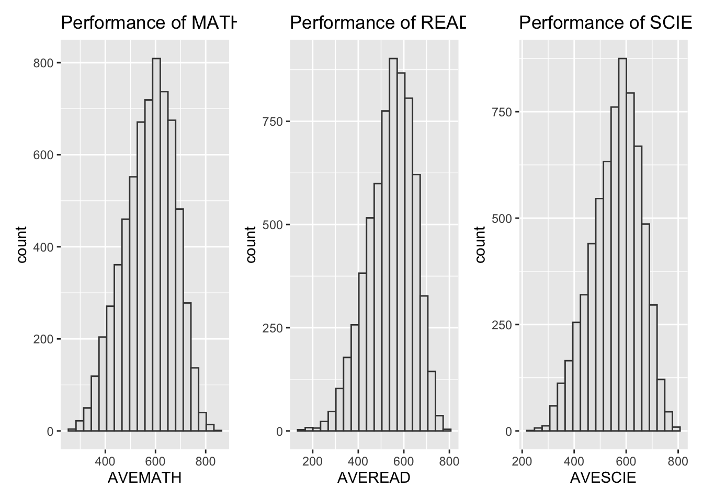
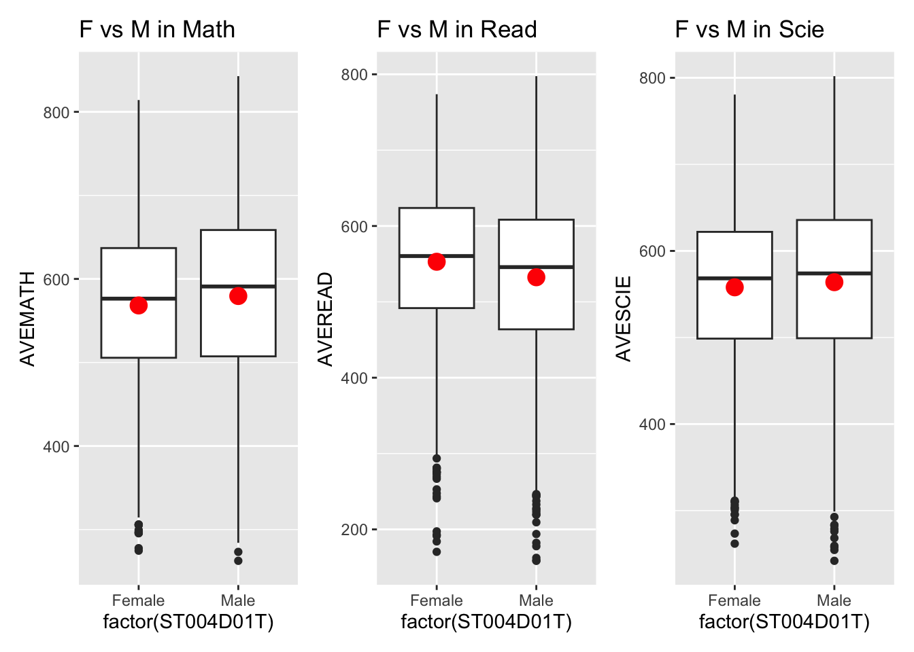
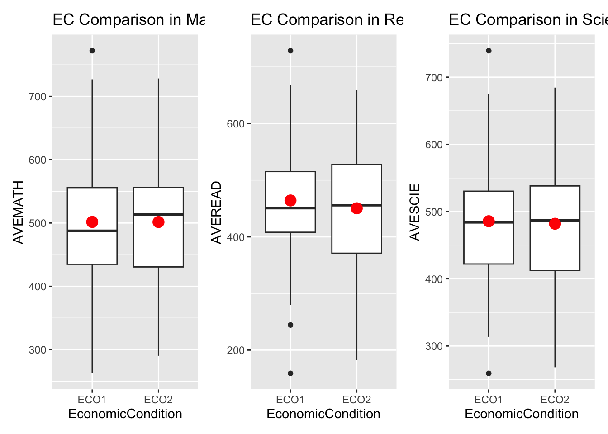
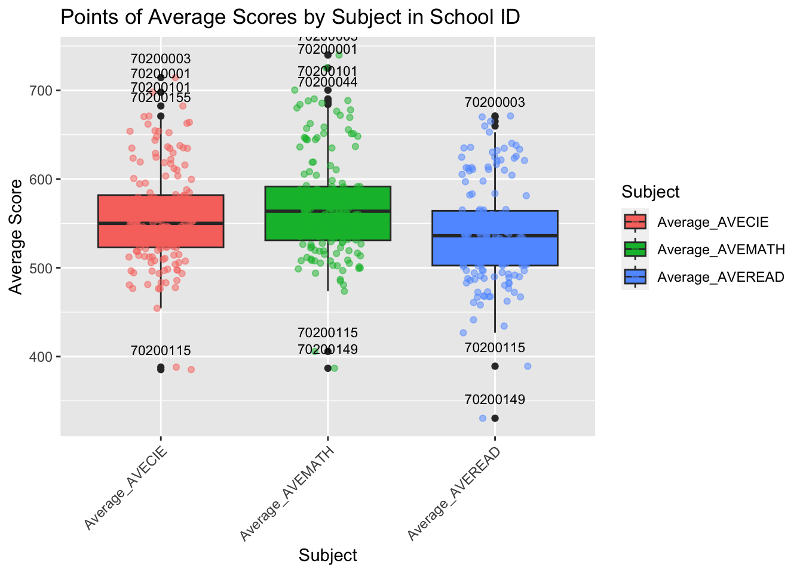
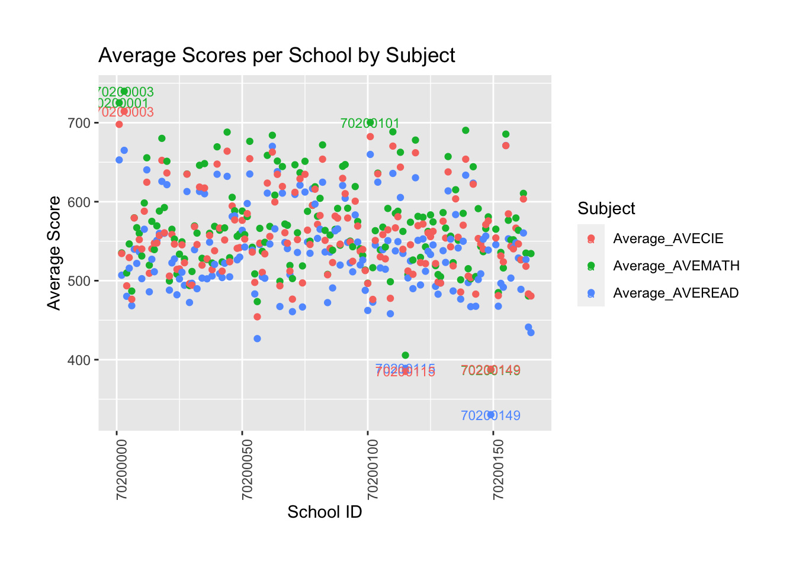

pacman::p_load(ggrepel, patchwork,
ggthemes, hrbrthemes,
tidyverse, haven) take home exercise 1
Object:
1,The distribution of Singapore students’ performance in mathematics, reading, and science
2,The relationship between these performances with schools, gender and socioeconomic status of the students.
Method:
- We use the average score as a benchmark to display data in mathematics, reading, and science.
- We use the average score for schools, gender, and socioeconomic status.
Limitation:
- The average is just one benchmark and may not be useful for everyone.
- The selection of data is based on our understanding, which may introduce bias.
Prepare data:
Resource:Student questionnaire
Import data
stu_qqq_SG <- read_rds("data/stu_qqq_SG.rds")Calculcate the Average
stu_qqq_SG_MRS <- stu_qqq_SG %>%
mutate(AVEMATH = (PV1MATH + PV2MATH + PV3MATH + PV4MATH + PV5MATH + PV6MATH + PV7MATH + PV8MATH + PV9MATH + PV10MATH ) / 10,
AVEREAD = (PV1READ + PV2READ + PV3READ + PV4READ + PV5READ + PV6READ + PV7READ + PV8READ + PV9READ + PV10READ )/ 10,
AVESCIE = (PV1SCIE + PV2SCIE + PV3SCIE + PV4SCIE + PV5SCIE + PV6SCIE + PV7SCIE + PV8SCIE + PV9SCIE + PV10SCIE )/ 10)Object 1
p1 <- ggplot(data=stu_qqq_SG_MRS,
aes(x = AVEMATH )) +
geom_histogram(bins=20,
boundary = 100,
color="grey25",
fill="grey90") +
theme_gray() +
ggtitle("Performance of MATH") p2 <- ggplot(data=stu_qqq_SG_MRS,
aes(x = AVEREAD )) +
geom_histogram(bins=20,
boundary = 100,
color="grey25",
fill="grey90") +
theme_gray() +
ggtitle("Performance of READ") p3 <- ggplot(data=stu_qqq_SG_MRS,
aes(x = AVESCIE )) +
geom_histogram(bins=20,
boundary = 100,
color="grey25",
fill="grey90") +
theme_gray() +
ggtitle("Performance of SCIE") p1 + p2 + p3
Summary:
The mathematics, reading, and science scores conform to a normal distribution. Since we are not analyzing data from other countries, there is no basis for comparison, which means we can only say that this is a set of normal data with no apparent anomalies.
Object 2
Gender
stu_qqq_SG_MRS_filtered <- stu_qqq_SG_MRS %>%
filter(ST004D01T == 1 | ST004D01T == 2)p4 <- ggplot(data = stu_qqq_SG_MRS_filtered,
aes(y = AVEMATH,
x = factor(ST004D01T))) +
geom_boxplot() +
scale_x_discrete(labels = c("Female", "Male"))+
stat_summary(geom = "point",
fun.y="mean",
colour ="red",
size=4) +
ggtitle("F vs M in Math")p5 <- ggplot(data = stu_qqq_SG_MRS_filtered,
aes(y = AVEREAD,
x = factor(ST004D01T))) +
geom_boxplot() +
scale_x_discrete(labels = c("Female", "Male"))+
stat_summary(geom = "point",
fun.y="mean",
colour ="red",
size=4) +
ggtitle("F vs M in Read")p6 <- ggplot(data = stu_qqq_SG_MRS_filtered,
aes(y = AVESCIE,
x = factor(ST004D01T))) +
geom_boxplot() +
scale_x_discrete(labels = c("Female", "Male"))+
stat_summary(geom = "point",
fun.y="mean",
colour ="red",
size=4) +
ggtitle("F vs M in Scie")p4 + p5 + p6
Summary:
The boxplot reveals only minor differences between females and males. Males perform slightly better than females in mathematics, while females outperform males in reading. In science, the mean scores are nearly identical.
Socioeconomic Status
stu_qqq_SG_ECO1 <- stu_qqq_SG_MRS %>%
filter(ST250Q01JA == "1", ST250Q02JA == "1", ST253Q01JA == "4", ST006Q01JA =="1" |ST006Q02JA =="1"|ST006Q03JA =="1"|ST006Q04JA =="1"|ST006Q05JA =="1"
)stu_qqq_SG_ECO2 <- stu_qqq_SG_MRS %>%
filter(ST250Q01JA == "2", ST250Q02JA == "2")stu_qqq_SG_ECO1 <- mutate(stu_qqq_SG_ECO1, EconomicCondition = "ECO1")
stu_qqq_SG_ECO2 <- mutate(stu_qqq_SG_ECO2, EconomicCondition = "ECO2")
stu_qqq_SG_ECO_combined <- bind_rows(stu_qqq_SG_ECO1, stu_qqq_SG_ECO2)p7 <- ggplot(data = stu_qqq_SG_ECO_combined,
aes(y = AVEMATH,
x = EconomicCondition)) +
geom_boxplot() +
scale_x_discrete(labels = c("ECO1", "ECO2")) +
stat_summary(geom = "point",
fun.y = "mean",
colour = "red",
size = 4) +
ggtitle("EC Comparison in Math")p8 <- ggplot(data = stu_qqq_SG_ECO_combined,
aes(y = AVEREAD,
x = EconomicCondition)) +
geom_boxplot() +
scale_x_discrete(labels = c("ECO1", "ECO2")) +
stat_summary(geom = "point",
fun.y = "mean",
colour = "red",
size = 4) +
ggtitle("EC Comparison in Read")p9 <- ggplot(data = stu_qqq_SG_ECO_combined,
aes(y = AVESCIE,
x = EconomicCondition)) +
geom_boxplot() +
scale_x_discrete(labels = c("ECO1", "ECO2")) +
stat_summary(geom = "point",
fun.y = "mean",
colour = "red",
size = 4) +
ggtitle("EC Comparison in Scie")p7 + p8 + p9
Summary:
The boxplot shows only marginal differences in Mathematics, Reading, and Science scores between students from lower-income and higher-income families. However, the limitation lies in the data collection method, which may introduce some errors.
Schools
school_averages <- stu_qqq_SG_MRS %>%
group_by(CNTSCHID) %>%
summarise(Average_AVEMATH = mean(AVEMATH, na.rm = TRUE),
Average_AVEREAD = mean(AVEREAD, na.rm = TRUE),
Average_AVECIE = mean(AVESCIE, na.rm = TRUE))school_averages_long <- school_averages %>%
pivot_longer(
cols = starts_with("Average_"),
names_to = "Subject",
values_to = "Average_Score"
) %>%
mutate(Label = ifelse(Average_Score > 700 | Average_Score < 400, as.character(CNTSCHID), NA))p10 <- ggplot(school_averages_long, aes(x = Subject, y = Average_Score, fill = Subject)) +
geom_boxplot() +
geom_point(aes(color = Subject), position = position_jitter(width = 0.2), alpha = 0.5) +
labs(title = "Points of Average Scores by Subject in School ID",
x = "Subject",
y = "Average Score") +
theme(axis.text.x = element_text(angle = 45, hjust = 1))
p10 + geom_text(data = school_averages_long %>% group_by(Subject) %>%
mutate(is_outlier = ifelse(Average_Score < quantile(Average_Score, 0.25) - 1.5 * IQR(Average_Score) |
Average_Score > quantile(Average_Score, 0.75) + 1.5 * IQR(Average_Score), TRUE, FALSE)) %>%
ungroup() %>%
filter(is_outlier),
aes(label = CNTSCHID),
na.rm = TRUE,
vjust = -1.5,
check_overlap = TRUE,
size = 3)
Summary:
From this chart, it is apparent that math scores are higher than those for reading and science, with reading being the lowest of the three. We can also observe that the schools with IDs 70200003, 70200001, 70200101, 70200044 have relatively high average scores. Meanwhile, the schools with IDs 70200115 and 70200149 have the lowest scores across all three subjects, and it is necessary to investigate the reasons behind this.
ggplot(school_averages_long, aes(x = CNTSCHID, y = Average_Score, color = Subject)) +
geom_point() +
geom_text(aes(label = Label), na.rm = TRUE, vjust = 0.5, hjust = 0.5, check_overlap = FALSE, size = 3) +
theme(
axis.text.x = element_text(angle = 90, hjust = 1),
plot.margin = margin(t = 30, r = 30, b = 30, l = 30, unit = "pt")
) +
labs(title = "Average Scores per School by Subject",
x = "School ID",
y = "Average Score")
Summary:
Most schools’ scores range between 500 and 700. However, some schools achieve higher scores, such as 70200003 and 70200001, while others, such as 70200115 and 70200149, have lower scores. According to the chart, math scores are significantly better than reading scores.